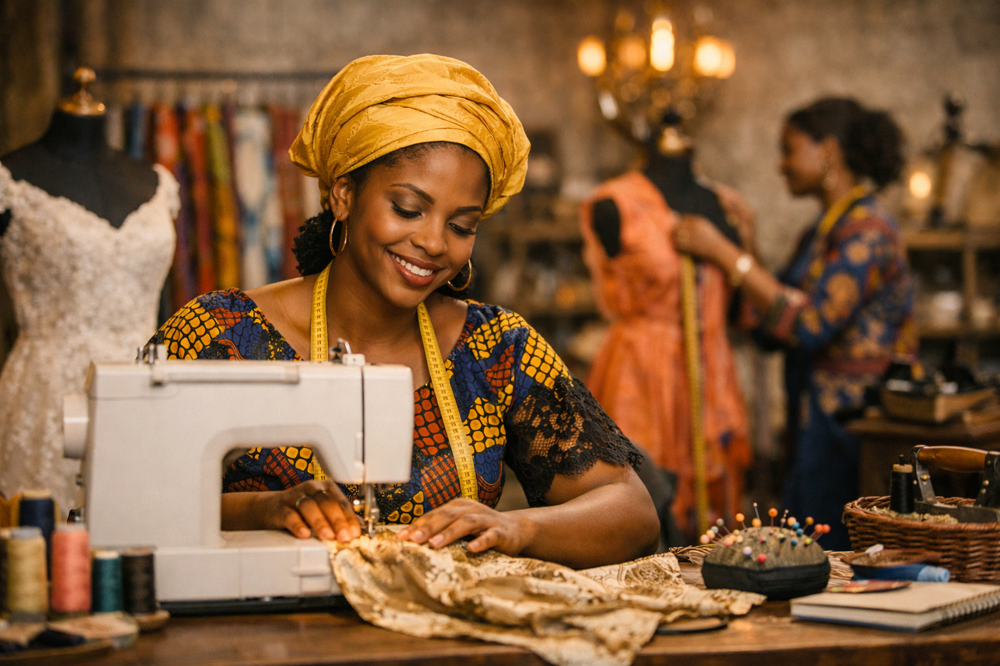

L’aventure Elisabeth Couture commence en 2020, dans un petit atelier familial à Cotonou. La fondatrice, Madame Elisabeth, passionnée de couture depuis son enfance, rêvait de donner vie à des créations qui allient l’élégance africaine et la modernité internationale. Inspirée par les tissus traditionnels béninois et les techniques artisanales transmises de génération en génération, elle a décidé de transformer sa passion en une entreprise.
Les débuts furent modestes : quelques machines à coudre, des rouleaux de wax colorés et une clientèle locale fidèle. Mais la détermination et la créativité de la fondatrice ont rapidement attiré l’attention. Chaque robe, chaque costume portait une histoire, celle d’un savoir-faire authentique et d’une volonté de mettre en valeur la culture béninoise.
Au fil des années, l’atelier s’est agrandi, accueillant de nouveaux talents et formant de jeunes couturiers. Elisabeth Couture est devenue un symbole de qualité et de raffinement, reconnu non seulement au Bénin, mais aussi à l’international. Aujourd’hui, l’entreprise incarne la rencontre entre tradition et innovation, et continue de porter haut les couleurs de l’artisanat béninois.
La fondatrice en chef reste au cœur de cette aventure, guidant l’équipe avec passion et transmettant ses valeurs : respect du client, amour du détail et fierté de l’identité culturelle. Son histoire est celle d’une femme visionnaire qui a su transformer un rêve en une marque de référence.

Madame Elisabeth, fondatrice en chef
Chaque création est réalisée avec amour et enthousiasme, reflétant notre attachement à l’art de la couture.
Nous garantissons des finitions impeccables et des tissus soigneusement sélectionnés pour satisfaire nos clients.

Nous allions tradition et modernité pour proposer des modèles uniques et adaptés aux tendances actuelles.
Nous plaçons le client au centre de notre démarche, en respectant ses besoins, sa culture et son identité.

Fondatrice & Directrice
Visionnaire et passionnée, elle a créé l’entreprise en 2020 pour valoriser la couture béninoise et transmettre son savoir-faire.

Styliste principal
Spécialiste des coupes modernes, il allie créativité et précision pour donner vie à des modèles uniques.

Couturière experte
Avec plus de 15 ans d’expérience, elle assure des finitions impeccables et forme les jeunes apprentis.

Assistante clientèle
Elle accompagne les clients dans leurs choix et veille à une expérience d’achat fluide et chaleureuse.